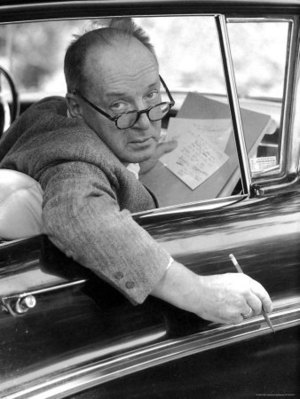
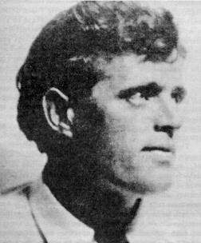
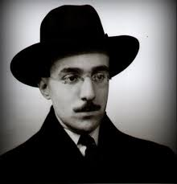

J'ai vendu des choses en ligne, étudié le droit animalier, et maintenant j'ai envie de faire des sites internet.
Voir|  |
Vladimir NabokovVladimir Vladimirovitch Nabokov est un écrivain (romancier, poète, traducteur et critique littéraire) américain d'origine russe né à Saint-Pétersbourg le 22 avril (10 avril) 1899 et mort à Lausanne (Suisse) le 2 juillet 1977. |
|  |
Jack LondonJack London, né John Griffith Chaney le 12 janvier 1876 à San Francisco et mort le 22 novembre 1916 à Glen Ellen, Californie, est un écrivain américain dont les thèmes de prédilection sont l'aventure et la nature sauvage. |
|  |
Fernando PessoaFernando António Nogueira Pessoa est un écrivain, critique, polémiste et poète portugais trilingue (principalement portugais, mais aussi anglais et, dans une faible mesure, français). Né le 13 juin 1888 à Lisbonne, ville où il meurt des suites de son alcoolisme le 30 novembre 1935. |
John ChienJohn Chien est né en Espagne en 2015. Il n'a encore rien publié mais il a un projet de roman sur la vie d'un chien. |
Cette page a été codée durant le FullStack program @LeWagon. C'était probablement une des expériences les plus cool de ma life.